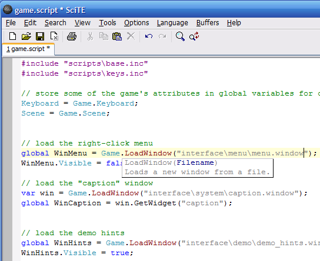
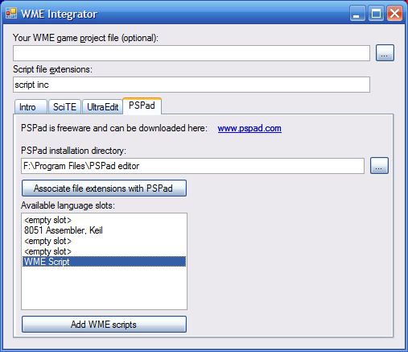

Wintermute Engine Development Kit comes with a bundled script editor. It's the open-source SciTE editor based on the excellent Scintilla editing component by Neil Hodgson (both can be found at www.scintilla.org). The customized SciTE editor provides syntax highlighting for WME scripts and also a compile command (Ctrl+F7) which will check the correctness of the script. SciTE also displays "calltips" when calling one of the built-in methods.

If you don't want to use SciTE editor, you can setup other programmer's editors to work with WME. The development kit includes a utility called "WME Integrator", which can automatically integrate WME scripts with the following editors: UltraEdit, PSPad and SciTE.
WME Integrator adds highlighting support, check-syntax command and associates the script file extensions with the selected editor.

If you want to use other editor, unsupported by WME Integrator, you can configure it manually. In the following subsections we will demonstrate configuring a text editor on UltraEdit. Setting up other editors should be fairly similar.
Note: You will have to assign the “.script” and “.inc” file extensions to your favorite text editor to take advantage of an automatic file opening from the WME tools. Please refer to your Windows documentation to learn how to change file associations.